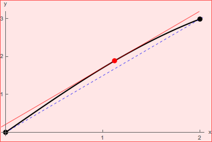

\[ f(x) = x+\sin {\Bigl (\frac {\pi }{4}\cdot x\Bigr )} \qquad \text {on } [0,2] \]
. The function \(f\) is continuous on \([0,2]\) and differentiable on \((0,2)\) since it is a sum of a linear
polynomial and a composition of a sine function and another linear polynomial.
Therefore, \(f\) satisfies the hypotheses of the Mean Value Theorem. We have
that
\[ f'(x) = 1+\frac {\pi }{4}\cdot \cos {\Bigl (\frac {\pi }{4}\cdot x\Bigr )} \]
\[ \frac {f(2) - f(0)}{2-0} = \frac {3}{2} \]
So we are looking to find all points \(c \in (0,2)\) which satisfy that \( f'(c) = \frac {3}{2} \). So we solve:
\[ 1+\frac {\pi }{4}\cdot \cos {\Bigl (\frac {\pi }{4}\cdot c\Bigr )} = \frac {3}{2} \]
Therefore,
\[ \frac {\pi }{4}\cdot \cos {\Bigl (\frac {\pi }{4}\cdot c\Bigr )} = \frac {1}{2} \]
and
\[ \cos {\Bigl (\frac {\pi }{4}\cdot c\Bigr )} = \frac {2}{\pi } \]
\[ \frac {\pi }{4}\cdot c = \arccos {\Bigl (\frac {2}{\pi }\Bigr ) }\]
\[ c =\frac {4}{\pi }\cdot \arccos {\Bigl (\frac {2}{\pi }\Bigr )\approx 1.12 }\]
Let’s confirm this result with the graph. 